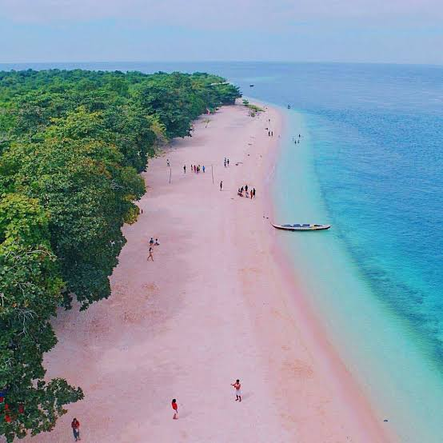
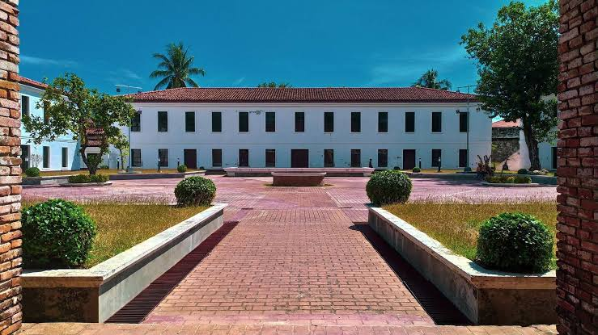
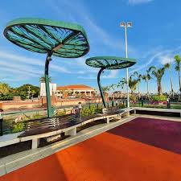
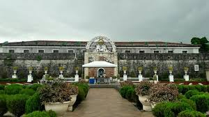

Yakan Village

The Yakan Village, nestled within the scenic landscapes of Zamboanga City in the Philippines, offers visitors a glimpse into the vibrant culture and traditions of the Yakan people, one of the indigenous tribes of Mindanao.
Aside from its renowned weaving industry, the Yakan Village also provides visitors with an opportunity to immerse themselves in the daily life and customs of the Yakan community.
Sadik Grand Mosque
The Sadik Grand Mosque, located in Zamboanga City, Philippines, stands as a testament to the city's vibrant Muslim community and architectural splendor.
Beyond its architectural magnificence, the Sadik Grand Mosque serves as a focal point for Islamic worship and cultural activities in Zamboanga City.
Sta. Cruz Island
Sta. Cruz Island, situated just off the coast of Zamboanga City in the Philippines, is renowned for its stunning pink sand beaches, making it a unique and picturesque destination.
Aside from its natural beauty, Sta. Cruz Island is also home to the Great Santa Cruz Island Protected Landscape and Seascape, a protected area aimed at preserving the island's delicate ecosystem.
Zamboanga Museum
The Zamboanga Museum is a treasure trove of the city's rich cultural heritage, offering visitors a captivating journey through its diverse history and traditions.
Visitors to the Zamboanga Museum can explore exhibits that delve into the region's indigenous tribes, such as the Subanen and Yakan, as well as displays detailing the city's role as a trading hub during the Spanish colonial period.
Paseo del Mar
Paseo del Mar, located in Zamboanga City, Philippines, is a bustling waterfront promenade that offers a picturesque blend of leisure, entertainment, and cultural experiences.
At Paseo del Mar, there's something for everyone to enjoy, from open-air cafes and seafood restaurants serving up local delicacies to lively entertainment venues hosting cultural performances and events.
Fort Pilar
Fort Pilar, nestled along the shores of Zamboanga City in the Philippines, stands as a resilient testament to Spanish colonial rule in the region.
Over the centuries, Fort Pilar has evolved into more than just a military stronghold; it has become a symbol of Zamboanga's cultural identity and historical significance.